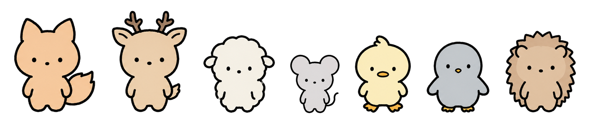
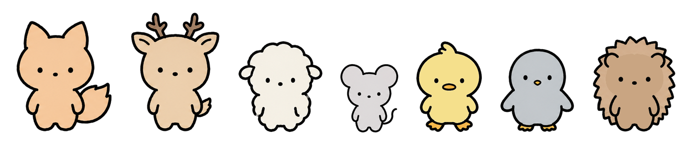
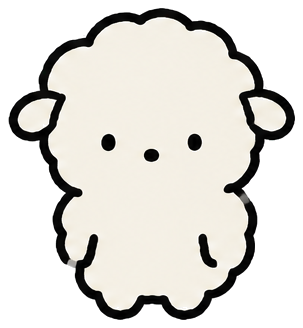
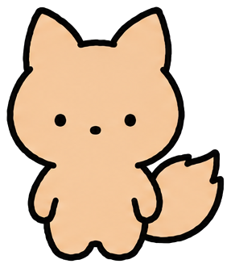
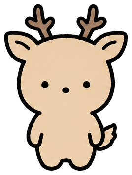
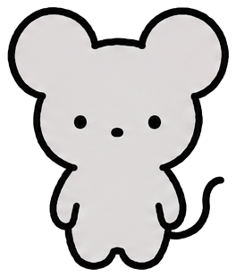
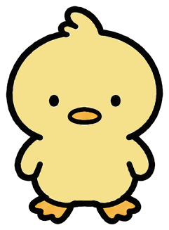
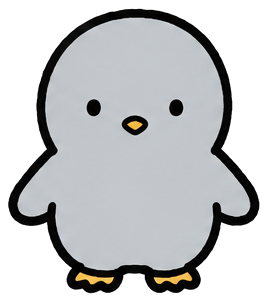
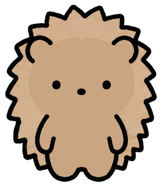

확정 캐스트 7인
동물 20종 시트에서 고른 7종. 작품 안에는 MBTI를 드러내지 않고, 성격은 행동으로만 보여준다. 아래 컬러는 프롬프트 지정값이 아니라 생성 결과에서 실측한 값.
라인업 — 현재 컬러 (엄마·아빠 1.2 / 남친 1.1 / 동생 0.8)

엄마 · 아빠 · 주인공 · 남동생 · 친구1 · 친구2 · 남친
라인업 — 제안 컬러 (오리 채도↑, 고슴도치 명도↓·단색화)

바뀐 건 오리와 고슴도치 둘뿐. 나머지 5명은 유지.
캐릭터별 평가

순함·여림·무리 속 눈치가 그대로 양. 코알라(MBTI일상툰 선점)를 피한 차별화. 구름형 실루엣이 망토·먹구름·반짝이 기호와 잘 붙는다.
컬러 유지. 흰 배경 위 크림은 외곽선에 의존하는데, 보리 고양이 때도 같은 조건이었고 확정 시트에서 문제 없었다.
#F6F2E6 유지
뾰족 귀 + 큰 꼬리 = 날 선 실루엣, 잔소리 엄마의 기민함. 밈 동물(호랑이)보다 가족 안에 두기 자연스럽다. 여우=ENTP 이미지가 있으나 MBTI 비노출이라 무관.
컬러 유지하되 주의: 캐스트 중 가장 채도가 높고 포인트 컬러(테라코타 #C77B3F)와 같은 색상군. 망토 + 엄마가 한 컷에 있는 장면(EP.01 3컷)에서 확인. 부딪히면 여우를 #F4D3B4로 낮춘다.
#F6CA9E 유지 포인트
조용·온순·묵묵. 뿔이 곧 "큰 몸집·아빠" 마커라 1.2배와 겹쳐 가족 중 가장 키가 커진다. "말 대신 과일 깎기"에 어울리는 여백.
드리프트 주의: 뿔 가지 수가 컷마다 변할 수 있다. 2갈래 뿔로 고정해 프롬프트에 명시.
#EACEAA 유지
작고 잽싸고 사고 치는 동생. 0.8배 + 큰 귀로 개그 담당 실루엣이 명확. 밈 동물(원숭이)은 이 문법에서 실루엣이 애매해 쥐가 낫다.
컬러 유지. 친구2 펭귄과 같은 회색 계열이지만 명도 차이가 있고 실루엣(귀 vs 부리)이 크게 달라 한 컷에 있어도 구분된다.
#DED6DA 유지
꽥꽥 시끄럽고 밝음. 부리 = 말 많음. 노랑 = 외향 에너지. 주인공을 밖으로 끌어내는 역할이 색부터 읽힌다.
컬러 조정 제안. 현재 연노랑은 주인공 크림과 너무 가깝다. 둘이 가장 자주 함께 나오는 조합이라 채도를 올린다.
#FAEEBE 현재 #F5E08C 제안
뒤뚱·조용·무리 속 소심. 캐스트 중 유일한 한색이라 "풀죽은 친구" 위 먹구름과 톤이 이어진다. 발동 대상 역할에 맞는 가라앉은 색.
컬러 유지. 캐스트에서 가장 어두운 색이라 4컷 저채도 처리와 자연스럽게 맞물린다.
#C2C6CA 유지
가시 = 겉은 까칠, 속은 부드러움. 양을 안으면 찔리는 시각 개그, "고슴도치 딜레마"가 T 남친 × F 여친 소재와 정확히 맞는다. INFP×ENTJ는 유명한 궁합 밈. 다만 ENTJ의 '리더·야망' 면은 실루엣에 없어, 그 면은 행동(계획 세워 주기, 결정 대신 해 주기)으로 보여줘야 한다.
컬러 조정 제안. 현재 색이 아빠 사슴과 거의 같다(둘 다 집에 인사 오는 장면에서 만남). 명도를 내려 분리하고, 생성 결과에 있던 얼굴 밝은 패치는 제거해 단색으로. 가시는 외곽선 톱니로만, 몸 안쪽 선 없음.
#DEC2A2 현재 #C9A582 제안팔레트 전체 판단
- 난색 5(양·여우·사슴·오리·고슴도치) + 한색 2(쥐·펭귄). 실루엣이 모두 다르므로 색은 보조 식별이면 충분하고, 가까운 쌍만 벌리면 된다: 양–오리(채도), 사슴–고슴도치(명도).
- 명도 순서 양 > 오리 > 쥐 > 사슴 ≈ 여우 > 고슴도치 > 펭귄. 주인공이 가장 밝아 시선이 먼저 간다.
- 조류(오리·펭귄)의 부리·발은 몸과 다른 색이 붙는다. 마커가 아니라 종 특징이므로 허용하되 색을 고정: 오리 부리·발 #F0A83A, 펭귄 부리·발 #E8B24A.
- 가족이 이종(양·여우·사슴·쥐)이 됐으므로 "가족은 같은 색 계열" 규칙은 폐기. 가족 식별은 크기(1.2 / 1.0 / 0.8)로.